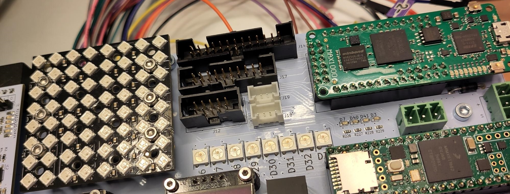
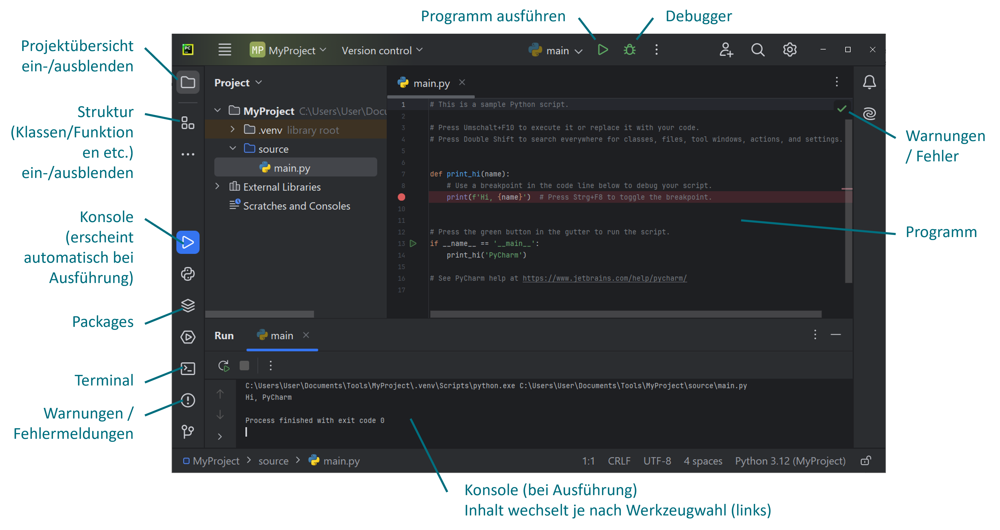
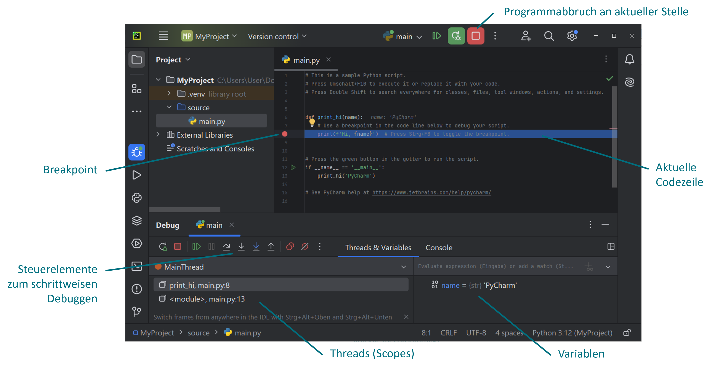

Übersicht#
Nachdem wir die relevanten Grundlagen erarbeitet haben, wollen wir Python nun an praxisorientierten Beispielen einsetzen, um die RGB-Matrix der BLP anzusteuern. Zuerst werden wir uns ein wenig mit der Schnittstelle (Interface) beschäftigen und dann den Fokus relativ rasch auf statische/dynamische LED-Muster legen.

Zwischen den Aufgaben werden wir immer wieder kleine Theorie-Inputs haben, wo wir das vorhandene Grundlagenwissen stetig erweitern. Individuelle Lücken sind individuell zu schliessen.
Dieser Teil des Kurses ist wiederum in verschiedene Teile gegliedert, zu welchen jeweils ein Jupyter-Notebook existiert.
Tools#
Wiederum liegen JupyterLab-Notebooks vor mit Theorieinputs und den Aufgabenstellungen. Die Umsetzung der Aufgaben sollten in PyCharm erfolgen, da wir dort mit sämtlichen Features einer modernen Entwicklungsumgebung (IDE) arbeiten können. Falls Sie bereits eine andere IDE (z. B. VS Code) verwenden, können Sie auch damit arbeiten.
PyCharm#
PyCharm stellt alle nützlichen Features bereit, welche für die professionelle Softwareentwicklung (Software Engineering) benötigt werden. Wir werden lediglich einen Bruchteil davon kennenlernen, d. h. auch hier können Sie sich bei Interesse selbstständig weiter einarbeiten. Anfänglich erscheint PyCharm relativ komplex, doch wenn Sie zukünftig einmal ein grösseres Softwareprojekt realisieren, werden Sie die Möglichkeiten, die eine solche Entwicklungsumgebung (IDE) bietet, sehr schnell zu schätzen wissen.

Wir werden die für uns relevanten Features von PyCharm im Unterricht schrittweise kennenlernen, doch an dieser Stelle soll das Wichtigste kurz angesprochen werden. Im Gegensatz zu JupyterLab haben wir es in Jupyterlab mit “reinen” Python-Files bzw. kompletten Python-Programmen zu tun, die nicht aus verschiedenen Teilen (Zellen) bestehen, die wahlweise ausgeführt werden können. Das komplette Python-Programm wird (von oben nach unten) ausgeführt.
Debugging#
PyCharm ist sehr hilfreich in Bezug auf das Finden/Beheben von Problemen beim Programmieren. Beim Programmieren prüft PyCharm das Programm ständig auf Fehler und zeigt dies oben rechts mit entsprechenden Icons an. Schwerwiegende Fehler (errors), z. B. Syntaxfehler, werden mit einem roten Ausrufezeichen angezeigt, Warnungen (warnings bzw. weak warnings) mit einem gelben Icon (Warnungen führen in der Regel nicht zu einem Programmabbruch, doch zeigen mögliche Probleme bzw. Verbesserungsmöglichkeiten auf). Klickt man auf eines dieser Icons, so erscheinen im unteren Fensterbereich detailiertere Informationen. Ein grünes Häkchen zeigt, dass keine Fehler/Warnungen vorliegen.
Ein Programm wir in PyCharm mit dem Run-Icon (grüner Pfeil) bzw. Rechtsklick → Run ‘…’ oder [Shift] + [F10] ausgeführt und läuft dann (falls keine Fehler auftreten) komplett durch. Im Falle von Laufzeitfehlern erscheint in der Konsole die Fehlermeldung und in der Regel kann dieser entnommen werden, wo der Fehler aufgetreten ist (z. B. in welcher Codezeile bzw. in welcher Funktion etc.).
Möchte man den Programmablauf an einer bestimmten Stelle anhalten/pausieren, um z. B. den Wert von gewissen Variablen zu prüfen, so ist der Debug-Modus extrem hilfreich. Dieser wird mit dem Debug-Icon (Käfer-Symbol) gestartet, wobei vorgängig durch Klick auf eine Zeilennummer ein Breakpoint (roter Punkt) gesetzt werden kann. Das Programm pausiert dann bei diesem Breakpoint und im unteren Fensterbereich erscheinen Debug-Werkzeuge.

Einerseits werden sämtliche Variablen mit den aktuellen Werten aufgelistet und andererseits kann man mit den entsprechenden Steuerelementen schrittweise das Programm durchgehen, um z. B. Variablenveränderungen in einer Schleife etc. ganz konkret zu kontrollieren. Bei komplexeren Programmen ist dies sehr wertvoll, da man ansonsten sehr viele print()-Anweisungen etc. bräuchte, um sämtliche Werte von Variablen in der Konsole auszugeben.
Programmstruktur#
Ein typisches Python-File ist so aufgebaut wie das folgende Code-Snippet. Halten Sie sich nach Möglichkeit an diese Struktur.
# Imports
import ...
# Konstanten etc.
...
# Funktionsdefinitionen
def my_function(...):
...
return ...
# Hauptteil
if __name__ == '__main__':
...
Im Folgenden wollen wir uns kurz mit dem obigen if-Statement befassen, da dieses evtl. etwas merkwürdig erscheint. Wie oben ersichtlich ist, beinhaltet dieses im Allgemeinen den Hauptteil unseres Programms. Was ist der Grund für dieses Konstrukt? Um diese Frage beantworten zu können, überlegen wir uns kurz, wie unser Python-Programm verwendet bzw. ausgeführt wird.
Ausführung als Hauptprogramm (Applikation)
Wenn das Programm direkt ausgeführt wird (z. B. in PyCharm wie oben beschrieben), so läuft es als Hauptprogramm ab. Bei der Ausführung als Hauptprogramm wird im Hintergrund automatisch eine Variable__main__erstellt (eine sogenannte special variable oder dunder variable, wobei dunder für double underscore steht), welche den Wert'__main__'erhält. Dasif-Statement ist also wahr, d. h. hat keine Wirkung. Wir hätten das Programm also auch ohne dasif __name__ == '__main__':-Statement schreiben können und es hätte genau gleich funktioniert (wie Sie es vermutlich gemacht hätten bis jetzt).Ausführung als Modul
Unser Python-File kann aber nicht nur als Hauptprogramm ausgeführt bzw. verwendet werden, sondern auch als Modul in einem anderen Pyhton-Programm. Nehmen Sie z. B. einmal an, Sie möchten die oben definierte Funktionmy_function()in einem anderen Python-File verwenden und importieren dazu das obige File. Ohne dasif __name__ == '__main__':-Statement würde beim Import nun das gesamte Programm ausgeführt werden, doch Sie möchten eigentlich nur die Funktion daraus verwenden. Dies lässt sich mittels desif __name__ == '__main__':-Statements nun elegant lösen, denn beim Import erhält die__main__-Variable nun nicht den Wert'__main__', sondern den Modulnamen (Filenamen). Damit ist dasif-Statement falsch und der Code darin wird nicht ausgeführt (die Funktionmy_function()kann aber problemlos verwendet werden, da diese nicht innerhalb desif-Statements definiert wurde).
Aufgabe#
Um PyCharm und die oben besprochene Programmstruktur etwas einzuüben, ist folgende Aufgabe nützlich.
Erstellen Sie ein Python-File
helper.py, in welchem eine Funktionroll_dice()definiert wird, welche den Wurf eines fairen Würfels simuliert, d. h. zufällig eine Zahl zwischen 1 und 6 zurückgibt. (Tipp: Für Zufallszahlen ist das Paketrandomnützlich.). Zum Testen der Funktion rufen Sie diese im Hauptteil (innerhalb desif __name__ == ...-Statements) auf und geben die Zahl in der Konsole aus.Erstellen Sie nun ein Python-File mit einem Namen Ihrer Wahl und importieren Sie das obige File via
import helper. Auf die Funktion können wir nun zugreifen mithelper.roll_dice(). (Alternativ hätten wir die Funktion auch direkt importieren können viafrom helper import roll_dice.) Rufen Sie die Funktion in einer Schleife 100 mal auf und zählen Sie in geeigneter Weise, wie oft jede Zahl gewürfelt wurde. Geben Sie das Ergebnis in tabellarischer Form aus, z. B. folgendermassen:
1: 17x
2: 15x
...
Gehen Sie im Debug-Modus durch einige Iterationen der Schleife und betrachten Sie im Debug-Fenster, wie sich die entsprechenden Variablen laufend verändern.
Erklären Sie, was passieren würde, wenn das
if __name__ == ...-Statement imhelper.py-File nicht verwendet worden wäre.
Grundlagen Python | PYT_G01 | 2024